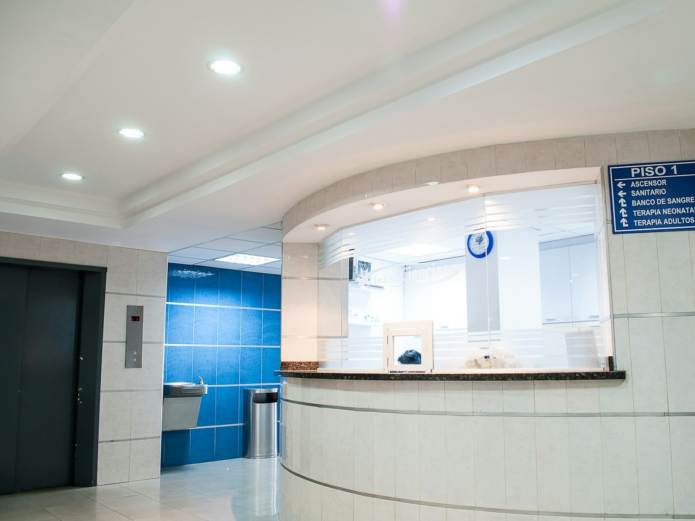

Comprehensive hearing evaluation
Pure-tone, speech, and middle-ear testing with an easy-to-understand review of your results.
What the test includes →Adult hearing evaluations, hearing-aid consultations, tinnitus support, custom hearing protection, and ongoing device care — explained without the jargon.
Pure-tone, speech, and middle-ear testing with an easy-to-understand review of your results.
What the test includes →Compare styles and features, try demo technology, then fine-tune your devices for real life.
Compare hearing-aid options →Assessment, education, sound-management options, and practical strategies for daily routines.
Explore tinnitus care →
We explain what we are testing, what the numbers mean, and what your practical choices are. You can take time to compare options before deciding on technology.
Example self-pay pricing for this demo site. Actual coverage and final costs depend on services, devices, and benefits.
Bring your questions, any current hearing devices, and a list of situations where listening feels difficult.